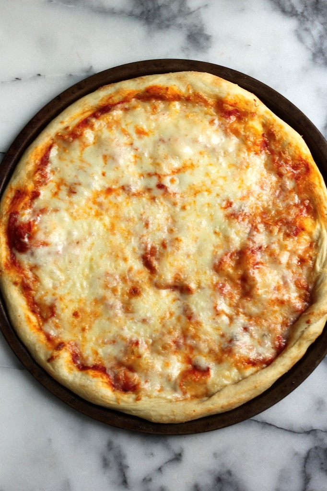

Cheese Pizza

Description
Who doesn't love pizza? Right?
In this recipe, you will learn how to serve yourself a simple cheese pizza. It may be easy-peasy, but it sure is tasty!
Ingredients
Crust
- 3 cups flour
- 1 tsp sugar
- 1 envelope active dry yeast
- 2 tbsp salt
- 1.5 cups water
- 2 tbsp + 2 tsp olive oil
Cheese
- 8oz. low-moisture shredded mozzarella cheese
Sauce
- 3 tbsp olive oil
- 1/2 cup onion
- 2 stalks celery
- 2 garlic cloves, minced
- 8oz tomato sauce
- 6oz tomato paste
- 3 tbsp grated parmesan cheese
- 1 tsp dried basil
- 1 tsp dried oregano
- 1 1/2 tsp salt
- 1 tsp sugar
- 1/2 tsp black pepper
Steps
Crust:
- Combine the bread flour, sugar, yeast and salt in the bowl of a stand mixer; stir to combine.
- Fit mixer with dough hook.
- Turn mixer on low speed and add the water and 2 tablespoons of the oil; beat until the dough forms into a ball around the hook. If the dough is super sticky, add additional flour, 1 tablespoon at a time, until the dough comes together in a solid ball. If the dough is too dry, add additional water, 1 tablespoon at a time.
- Scrape the dough onto a lightly floured surface and gently knead into a smooth, firm ball.
- Grease a large bowl with the remaining 2 teaspoons olive oil, add the dough, cover the bowl with plastic wrap. Place the bowl in a warm area and let it double in size, about 90 minutes.
- Turn the dough out onto a lightly floured surface and divide it into 2 equal pieces. Wrap one dough well in saran wrap and place in the freezer for a later use.
- Place the dough you'll be using on a piece of plastic wrap and let it rest for 10 minutes.
Sauce:
- In a large skillet, heat the oil over medium-flame. Add the onion, celery and garlic and saute until soft; about 5 minutes. Add tomato sauce and tomato paste and stir until smooth.
- Add remaining ingredients and bring to slow simmer. Simmer for 45 minutes. Remove from heat and allow sauce to cool.
- Spread the sauce on pizza dough, as needed.
Cheese:
- Grate cheese, then place it in a large, clean bowl. Place bowl in the freezer for at least 20 minutes.
Assembling the pizza:
- Preheat oven to 450 degrees (F).
- Roll dough out to a large circle (about 12 inches). Pour a 1/4 cup of sauce in the center and spread it around evenly. Add cheese.
- Place pizza in the oven to bake for 10-12 minutes, or until the crust is set and the cheese is bubbling. Cut into slices and serve at once!